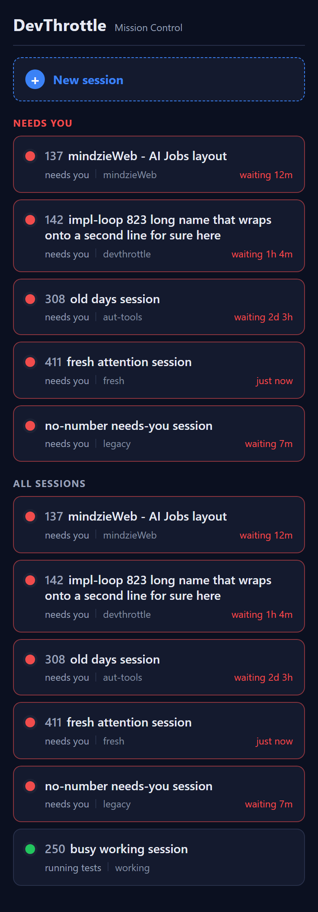
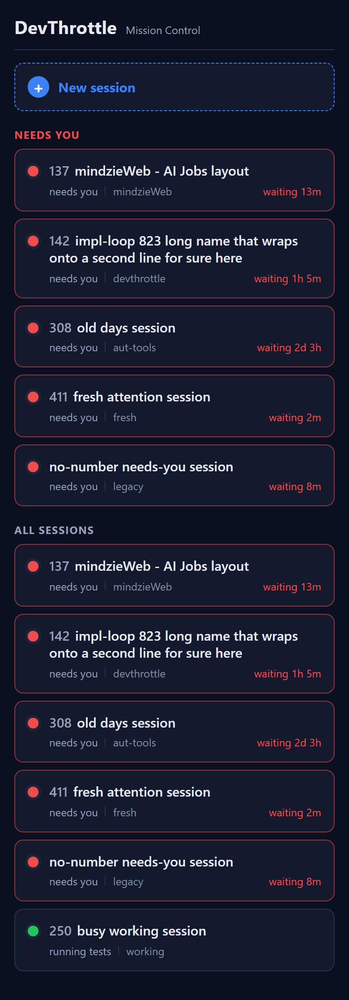

Title: [Mobile] Roster card: muted three-digit session number prefix on the name + live "waiting Xm" (since needs-you) on the status line
Pull request: #845 | Branch:
issue-844-mobile-roster-number-waiting | Verifier: QA Agent
(independent) | Date: 2026-06-29
The QA Agent did not reuse the Developer's binary or screenshots. The PR branch was checked out into
an isolated git worktree; the mobile Progressive Web App was built fresh
(npm install -> npm run typecheck -> npm run build, both clean).
A mock Gateway (a small Node server) served the freshly built dist/ under /m/ with the
per-machine token injected into index.html exactly as the real Gateway does, and stubbed
GET /sessions with fixtures carrying FIXED absolute needsYouSince timestamps and
known number values - so both the duration ladder and the live tick can be observed
deterministically. The roster was driven with Playwright at a phone-sized viewport
(390 x 844, deviceScaleFactor 2). The pure duration formatter was additionally
unit-tested with fixed clock values for boundary coverage (including the sub-minute case that timing
can miss live).
| # | Criterion | Expected | Actual (observed) | Result |
|---|---|---|---|---|
| 1 | Three-digit number rendered as a muted prefix before the name; null-number session shows no prefix. | 042 <name> muted prefix on numbered cards; no prefix when number is null. |
Cards 137, 142, 308, 411, 250 render a dim/muted
number (.row-num, color --text-dim, weight 600) before the bold name. The
"no-number needs-you session" card (number=null) renders the name with NO prefix and no placeholder.
See qa-roster-390px-t0.png. |
PASS |
| 2 | Number comes from session.number in the REGENERATED typed client, matching /sessions. |
Rendered number == /sessions number; schema.ts now contains number. |
mobile/src/api/schema.ts SessionDto now declares
number?: null | number | string; (added by the regen; it predated #820). Rendered values
equal the stubbed payload exactly (137=137, 142=142, 308=308, 411=411, 250=250). Home.tsx
reads session.number (not hardcoded). npm run typecheck passes, proving the field
is typed, not derived. |
PASS |
| 3 | Needs-you card shows waiting <dur> on the right of the status line, from needsYouSince. |
A needs-you card ~12 min idle shows waiting 12m right-aligned. |
Card 137 (needsYouSince ~12m ago) shows waiting 12m right-aligned in the
attention color (.row-waiting, margin-left:auto). Working card shows none. |
PASS |
| 4 | The waiting time ticks live without a page reload. | Value advances over time with no reload; client-side tick from held needsYouSince. |
Two captures 65s apart, no reload: 137 12m->13m, 142 1h 4m->1h 5m,
411 just now->2m, no-number 7m->8m. Mechanism: useNow(1000) re-renders each
second and recomputes from the held stamp (no roster refetch). See
qa-roster-390px-t0.png vs qa-roster-390px-t1-after-65s.png. |
PASS |
| 5 | Duration ladder: <1m -> "just now"; minutes -> "Xm"; hours -> "Xh Ym"; days -> "Xd Yh". | All four magnitudes correct. | Live at 390px: just now (411), waiting 12m (137), waiting 1h 4m (142),
waiting 2d 3h (308). Pure-function unit test: 14/14 cases pass incl. 59s->"just now",
60s->"1m", 1h exact->"1h 0m", 1d exact->"1d 0h", future/negative->"just now", null/garbage->"".
See qa-ladder-unit-test.txt. |
PASS |
| 6 | Working/other (non-needs-you) cards show NO waiting time; status line stays status . repo. |
Working card has no waiting text. | Card 250 (green/working) shows only running tests . working - no waiting element rendered
(WaitingTime only mounts for attention && needsYouSince). See
qa-roster-390px-t0.png bottom card. |
PASS |
| 7 | #838 layout preserved; roster loads from GET /sessions via the typed client with Bearer. |
Full-width wrapping name with prefix, repo under name, dot, grouping, attention styling, tap-to-open; Bearer attached. | Card 142's long name wraps onto a second line full-width AFTER the 142 prefix; repo sits on
the second line beside the status; status dot at the start; "Needs you"/"All sessions" grouping intact;
needs-you cards have the red attention border; each row links to /m/session/<id>. All 17
browser GET /sessions requests carried Authorization: Bearer qa844-bearer-token
(verified with the service worker both blocked and allowed). See qa-sessions-bearer.txt. |
PASS |
mobile/ (schema.ts, Home.tsx, waiting.ts, styles.css)
plus proof. No .NET file changed.BuildMobileApp in CcDirector.Gateway.csproj) is gated by RunMobileBuild,
true only for Release or explicit -p:BuildMobile=true. A routine Debug
dotnet build cc-director.sln does NOT run npm. This target is unchanged by the PR./transcription/test->/transcription, added controllerSessionId).
No mobile consumer relies on those path keys (transcription uses literal fetch URLs + local types);
npm run typecheck passes.npm run typecheck and npm run build both
succeed on the PR branch content.
t0 (initial):  
14/14 PASS - see qa-ladder-unit-test.txt